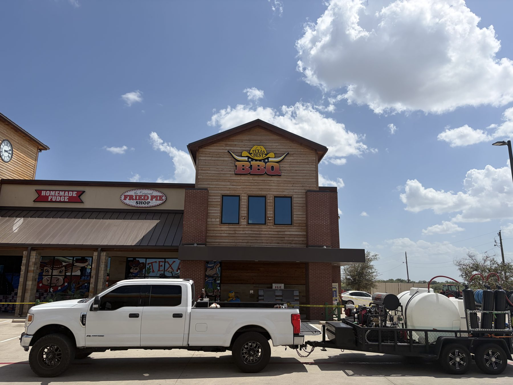
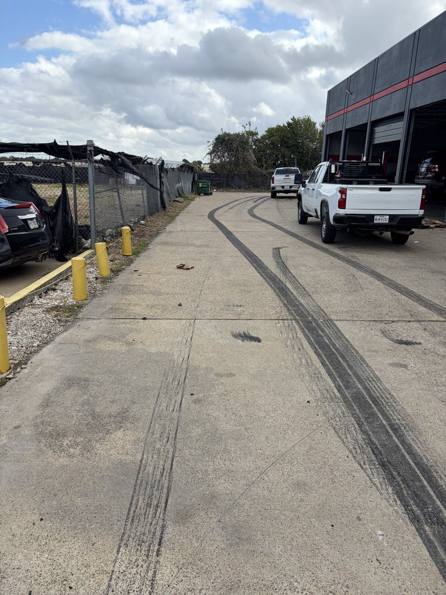
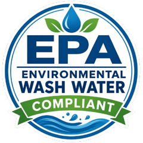

"Hired Front and Center Bin Cleaning to clean my two trash cans. My bins were gross and probably needed to be cleaned for years. They came out and were professional and kind. They did an amazing job and will definitely have them come back."

DFW Metroplex · Johnson County
Veteran owned cleaning, preservation and surface protection for residential, commercial and municipal properties across Texas.
We service
Reviews
"Hired Front and Center Bin Cleaning to clean my two trash cans. My bins were gross and probably needed to be cleaned for years. They came out and were professional and kind. They did an amazing job and will definitely have them come back."
"Came and got straight to it, showed places I wanted cleaned and then he even noticed spots I didn't and made me aware of it and everything looks great and the bins are immaculate no smell or any of that will definitely be using his services again"
"I seriously believe they're the best in the business! Came they came out and showed out!! Cleaned my driveway which was full of stains. Cleaned my trash bins, as well as the sides of my house. Very professional and hardworking. I would recommend them to anyone for any of your restorative services!!"
Services
Our work
Drag the handle to see the difference.


BeforeAfter
 BeforeAfter
BeforeAfter


About us
Front and Center was founded by U.S. military veterans who saw the need for dependable, professional property cleaning and preservation across Texas.
In the field, cutting corners has consequences, and we bring that same discipline to every job. Every project gets a defined scope, a proven process and a consistent standard, no matter the property or its size.
Why it matters
Unprotected concrete and masonry absorb water through micro-cracks.
Oils, dirt and chemical deposits build up and wear surfaces down.
Sunlight breaks down coatings, sealers and roofing materials.
Algae, mold and lichen stain damp surfaces and speed up deterioration.
The wrong sealer can trap moisture and cause early damage.
Irregular cleaning lets buildup settle in, making surfaces harder to restore.
Cleaning runoff needs responsible collection and disposal.
Service area
Call to confirm your location.
Contact
Every job starts with a no obligation site assessment and a written condition report.